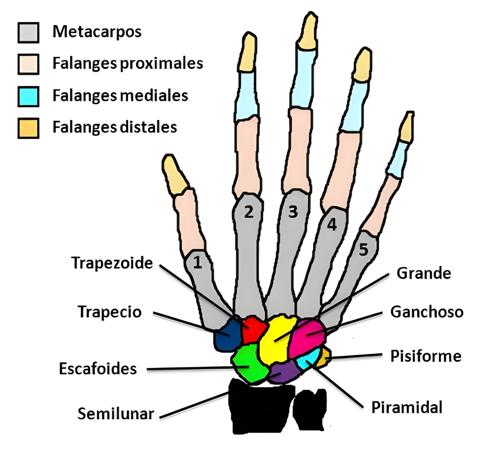
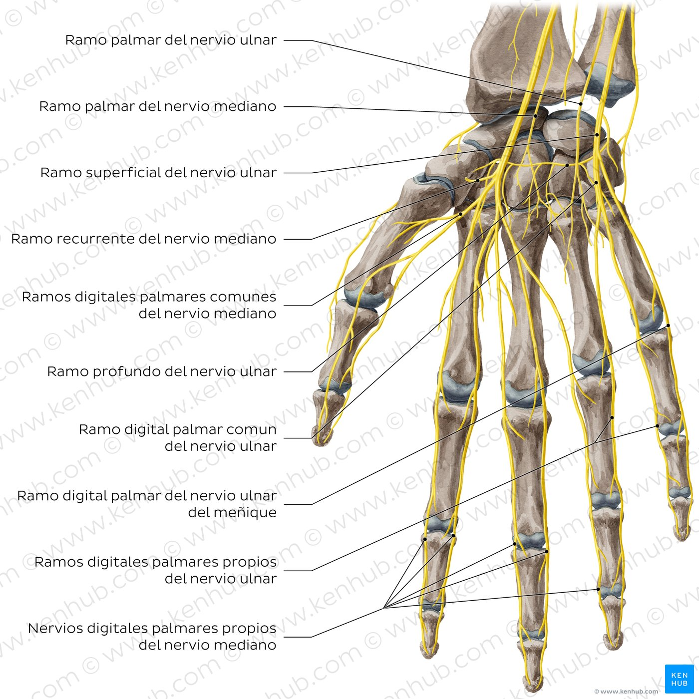

Tecnológico Boliviano Alemán
Anatomía Humana
Por:
Jhery Quito Rivera
Jhery Quito Rivera
Anatomía Humana
Sistema Óseo del Miembro Superior
La mano se encuentra distal al antebrazo y está formada por 27 huesos.


8 huesos
5 huesos
14 huesos